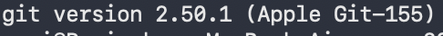
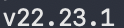
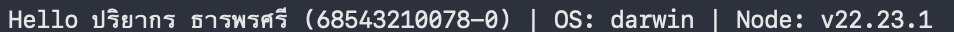
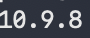

รายละเอียดผลงาน
รัน hello.js และตรวจ environment แล้ว
ผลตรวจ: passVersion:
lab-01-submission-v1ภาพหลักฐาน (4)








เอกสารและผลการทดสอบ
README.md
# Week 01 Evidence ใส่ screenshots, test output หรือ reflection ที่ไม่ใช่ข้อมูลลับ แล้วอ้างชื่อไฟล์ใน `../README.md` ## npm run start  ## Node.js Version  ## npm Version  ## Git Version 
README.md
# ENGSE203 LAB 01 — Developer Environment & GitHub Repository Setup
## ผู้จัดทำ
- **ชื่อ-นามสกุล:** ปริยากร ธารพรศรี
- **รหัสนักศึกษา:** 68543210078-0
- **ระบบปฏิบัติการที่ใช้:** macOS
## วัตถุประสงค์ของงาน
- เตรียมสภาพแวดล้อมสำหรับพัฒนาโปรแกรมในรายวิชา ENGSE203
- ตรวจสอบการติดตั้ง Git, Node.js และ npm ให้พร้อมใช้งาน
- ฝึกสร้างและจัดการโปรเจกต์ Node.js เบื้องต้น
- ฝึกใช้ `package.json` และ npm script สำหรับรันโปรแกรม
- เตรียมโครงสร้าง Repository และหลักฐานการทำงานสำหรับส่ง LAB
## เครื่องมือที่ใช้
- macOS
- Terminal
- Git
- Node.js
- npm
- Visual Studio Code
## วิธีติดตั้งและรัน
ตรวจสอบว่า Git, Node.js และ npm ติดตั้งเรียบร้อยแล้ว
```bash
git --version
node --version
npm --version
```
ติดตั้ง dependencies ของโปรเจกต์
```bash
npm install
```
รันโปรแกรม
```bash
npm run start
```
โปรแกรมจะเรียกไฟล์ `src/hello.js` ตาม script ที่กำหนดไว้ใน `package.json`
## โครงสร้างไฟล์
```text
.
└── engse203-lab01
├── README.md
├── package.json
├── evidence
│ ├── git-version.png
│ ├── node-version.png
│ ├── npm-version.png
│ └── npm-run-start.png
└── src
└── hello.js
```
## หลักฐานผลลัพธ์
หลักฐานการตรวจสอบ Development Environment และผลการรันโปรแกรมถูกเก็บไว้ในโฟลเดอร์ `evidence/`
### Git Version

ไฟล์หลักฐาน: `evidence/git-version.png`
### Node.js Version

ไฟล์หลักฐาน: `evidence/node-version.png`
### npm Version

ไฟล์หลักฐาน: `evidence/npm-version.png`
### npm run start

ไฟล์หลักฐาน: `evidence/npm-run-start.png`
## อธิบายผลลัพธ์
จากการตรวจสอบ Environment พบว่าสามารถเรียกใช้งาน Git, Node.js และ npm ผ่าน Terminal ได้ และสามารถใช้คำสั่ง
```bash
npm run start
```
เพื่อรันโปรแกรม Node.js จากไฟล์ `src/hello.js` ผ่าน npm script ที่กำหนดไว้ใน `package.json`
หลักฐานการตรวจสอบเวอร์ชันและผลการรันโปรแกรมถูกจัดเก็บไว้ในโฟลเดอร์ `evidence/` และอ้างอิงไว้ใน README นี้
## ปัญหาที่พบและวิธีแก้ไข
- **ปัญหา:** หาก `npm run start` ไม่สามารถทำงานได้ ให้ตรวจสอบว่าใน `package.json` มี script ชื่อ `start` และระบุ path ของไฟล์ถูกต้อง
- **วิธีแก้:** ตรวจสอบส่วน `scripts` ใน `package.json` ให้มีคำสั่งสำหรับรัน `src/hello.js` เช่น
```json
{
"scripts": {
"start": "node src/hello.js"
}
}
```
จากนั้นรันอีกครั้งด้วย
```bash
npm run start
```
## References & AI Assistance
- **Source / Documentation:** Git Documentation, Node.js Documentation และ npm Documentation
- **AI tool used:** ChatGPT
- **Used for:** ช่วยตรวจสอบโครงสร้าง README, จัดรูปแบบ Markdown และอธิบายวิธีอ้างอิงไฟล์หลักฐาน
- **My adaptation:** ตรวจสอบคำสั่งและปรับรายละเอียด README ให้ตรงกับโครงสร้างไฟล์และ Environment ที่ใช้ใน LAB